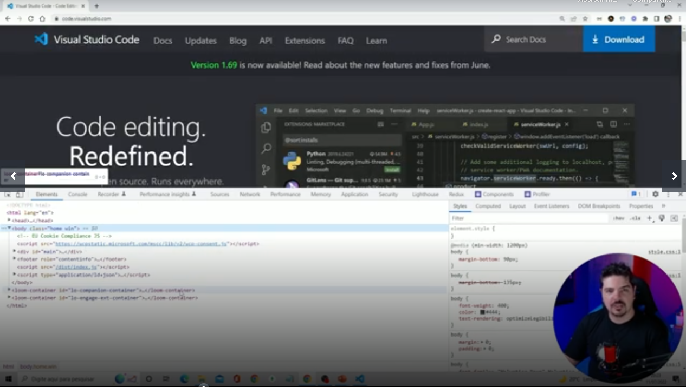
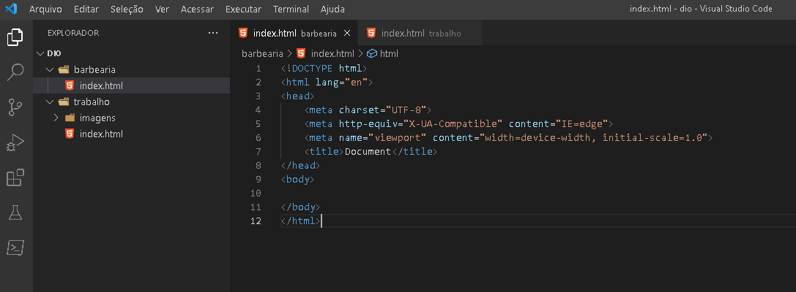

A ferramenta de inspecionar elemento é um utilitário que permite visualizar o código-fonte de qualquer página web. Além disso, você pode usá-la para fazer alterações temporárias e ver os resultados em tempo real, deixando o código-fonte original intacto. Isso é extremamente útil se você precisa testar uma alteração ou diagnosticar um problema. Também pode ser de grande valia se você encontrar um site com um recurso de que goste e estiver curioso para saber como ele foi implementado. A maioria dos principais navegadores, incluindo Chrome, Firefox e Safari, oferece algumas variações dessa ferramenta. Vamos ver como acessá-la em cada um deles.
Quando a ferramenta for aberta, ela apresentará uma visualização dividida. Por um lado, você tem uma prévia do site que está inspecionando, junto de alguns controles para ajustar a visualização e simular diferentes resoluções de tela. Por outro lado, existem várias seções contendo informações. O painel superior é o HTML da página. Passar o mouse sobre parte do código destacará a área apropriada da página à direita. Abaixo, estará um painel com informações sobre a página. Os detalhes exibidos nele variam dependendo da guia selecionada.
O painel inferior simplesmente contém notícias e atualizações nas ferramentas do desenvolvedor do Chrome. Você pode fechá-lo com segurança para reduzir a desordem clicando em X. Finalmente, você pode alterar a localização desses painéis clicando no menu de três pontos no canto superior direito do painel HTML e selecionando uma das opções de encaixe.
VoltarO documento HTML sempre inicia com o que chamamos de estrutura básica. Esta estrutura é quase que imutável. Sempre será dessa forma e você sempre, sempre começará seu HTML começando por esse código. Geralmente os editores como o Sublime Text já tem atalhos para iniciar os documentos HTMLs com essa estrutura, logo, você não precisa se preocupar em decorá-la, mas é bom que faça. Veja abaixo como ela se inicia:
É possível compreender o documento em HTML de uma maneira muito simples, através de uma divisão de blocos das tags essenciais, conforme a a seguinte estrutura:
Uma coisa importante: SEMPRE deve existir o doctype, que é este código < !DOCTYPE html> .
O doctype não é uma tag HTML, mas uma instrução para o navegador e outros programas que podem ler seu site, que o código encontrado ali é um código HTML. Assim eles sabem o que fazer para mostrar seu site da melhor forma possível. Lembre-se: o doctype é OBRIGATÓRIO e deve ser sempre a PRIMEIRA LINHA do seu documento.
Contém informações que não são transpostas visivelmente para o usuário/leitor do documento. São dados implícitos, de uso e controle do documento: vinculação com outros arquivos, aplicação de lógica de programação de scripts e metadados. Na prática, todo o conteúdo do cabeçalho fica delimitado entre a abertura e fechamento tag head.
Trata-se do documento em si, ou seja, a informação legível para o usuário/leitor do documento. É todo e qualquer texto que se deseja apresentar, assim como toda e qualquer forma de mídia de saída (imagens, sons, miniaplicativos embutidos, conteúdo multimídia, etc). Além disso, toda a apresentação de entrada de dados (formulários) também se aplica neste seção do documento. Na prática, o corpo do documento é delimitado pelo par de tags < body> e < /body> .
Este é o preceito básico que deve estar muito bem claro para você: onde as marcações se aplicam, e quais são os resultados deste modelo. Por exemplo: se vocês deseja informar conteúdo textual para saída legível ao usuário do seu sistema web, esta marcação deverá obrigatoriamente estar no bloco do corpo da página. Ainda: para definir qual o tipo de codificação da página (uma meta informação do documento), esta deve obrigatoriamente estar marcada no cabeçalho do mesmo documento.
Dentro do elemento BODY sua estrutura de página terá os elementos semânticos da construção da sua página, onde serão declarados e identificados cabeçalhos, rodapé, conteúdo principal, etc.
São utilizados para informar ao navegador que tipo de estrutura é essa que está sendo construída, podendo ser títulos, parágrafos, imagens, links, entre outros.
A tag head faz parte da estrutura básica do documento, sua finalidade é definir o cabeçalho do documento com informações que não serão exibidas dentro do conteúdo da página.
Normalmente, é apresentado com o uso do tipo "itálico".
O elemento < strong> é utilizado em conteúdos que são de "grande importância", incluindo coisas de urgentes (como alertas).